The Toulmin Argument Model
What this essay does. It explains the Toulmin model of argument, shows why warrants are central to critical thinking, explores how standards of reasoning vary across fields, and tests the model against abductive reasoning.
Path: personal motivation → basic model → warrants → qualification and rebuttal → field-dependent reasoning → abduction → synthesis.
1. Why Toulmin Changed How I Think
I was exposed to Stephen Toulmin during a second-year university course on critical thinking. The class was radically transformative because it awakened me to the practice and application of critical thought rather than simply the absorption of information.
Much of my earlier schooling had revolved around taking in material presented during PowerPoint lectures, reading textbooks, and completing problem sets. Critical thinking introduced a very different intellectual posture. I began to encounter a broad family of practices and ideas:
- argument evaluation
- patterns of reasoning
- skepticism
- introspection
- forms of evidence
- forms of explanation
- certainty versus uncertainty
- free thought
- critical questioning
- the Socratic Method
- argument analysis
- debating
- rhetoric
- higher-order thinking
- intellectual humility
- elements of interpretation
Exposure to these ideas made me much more confident in my ability to think. It also propelled me forward in my other studies. I began to see the bigger picture: how disciplines interconnect, which deeper principles govern entire academic traditions, and where their methods may have weaknesses or limitations.
Instead of treating disciplines as abstract domains populated by truth-bearers, I started to see them as large communities of people trying to answer specific questions using evidence and reasons. Each discipline has particular methods available to it, yet there are also recurring features of reasoning that connect them. In the sciences, for example, questions of causal relations repeatedly appear. I realized that I could participate in this process—not merely remember information, but understand it, apply it to situations in my life, and perhaps even contribute something myself.
That felt like an explosion of potential I had never known I possessed. Something had been lurking beneath the surface, and exposure to the Toulmin model of argumentation helped me begin chipping away at the barrier that had limited it.
2. The Toulmin Model at a Glance
Before looking at the deeper implications of the model, it helps to establish the vocabulary in one place. A Toulmin argument can be understood through six related components.
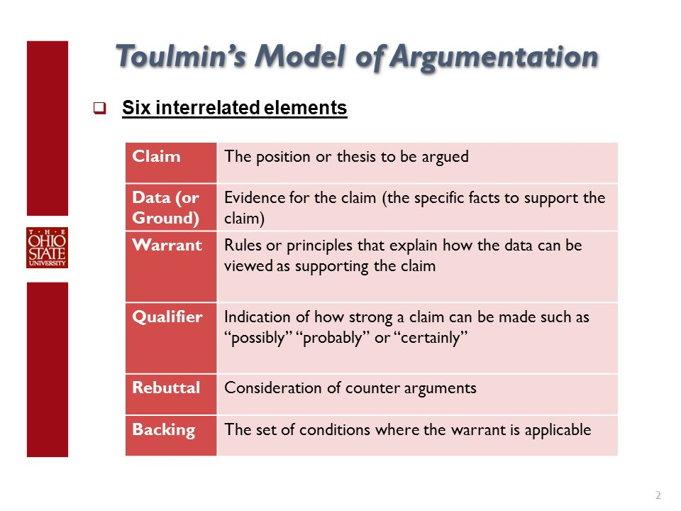
| Component | Function | Question to ask | Illustrative example |
|---|---|---|---|
| Claim (Conclusion) | The proposition whose merit must be established; in an argumentative essay, it may be the thesis. | What are you asking me to accept? | “I am a British citizen.” |
| Grounds / Data | Facts, observations, or evidence offered as the foundation for the claim. | What evidence are you giving me? | “I was born in Bermuda.” |
| Warrant | The rule, principle, assumption, or inferential bridge that authorizes movement from the grounds to the claim. | Why do these facts support that conclusion? | A person born in Bermuda is, under the relevant legal rule, a British citizen. |
| Backing | Support for the warrant itself when the warrant is not already accepted by the audience. | Why should I trust the warrant? | Relevant legal provisions or expertise in citizenship law. |
| Qualifier | Language expressing the force, scope, or degree of certainty of the claim. | How strongly does the evidence justify the claim? | Probably, presumably, certainly, possibly, or “as far as the evidence goes.” |
| Rebuttal / Reservation | Conditions under which the inference would fail or the claim would need to be withdrawn or revised. | Under what conditions would this not follow? | Unless an exceptional legal circumstance defeats the ordinary citizenship rule. |
The original examples commonly used to explain the model make the same point in more formal terms: a claim has to be established; grounds provide a factual basis; the warrant bridges grounds and claim; backing certifies the warrant; rebuttals identify legitimate restrictions; and qualifiers indicate the force with which the conclusion should be held. These elements are related, but they do different jobs.
The classic citizenship example in full
| Element | Original reference example |
|---|---|
| Claim | A speaker asks the listener to accept: “I am a British citizen.” |
| Grounds / Data | The supporting fact is: “I was born in Bermuda.” |
| Warrant | The bridge is the legal rule that a man born in Bermuda will legally be a British citizen. |
| Backing | If the listener does not accept the warrant, the speaker can supply relevant legal authority or credentials—for example, training as a barrister in London with specialization in citizenship law. |
| Rebuttal / Reservation | The reference example introduces an exceptional condition such as the person having betrayed Britain and become a spy for another country. The point is that the claim is not asserted without possible exceptions. |
| Qualifier | Words such as “probably,” “possible,” “certainly,” “presumably,” “as far as the evidence goes,” and “necessarily” indicate the force of the conclusion. “I am definitely a British citizen” expresses greater force than “I am a British citizen, presumably.” This connects naturally with defeasible reasoning. |
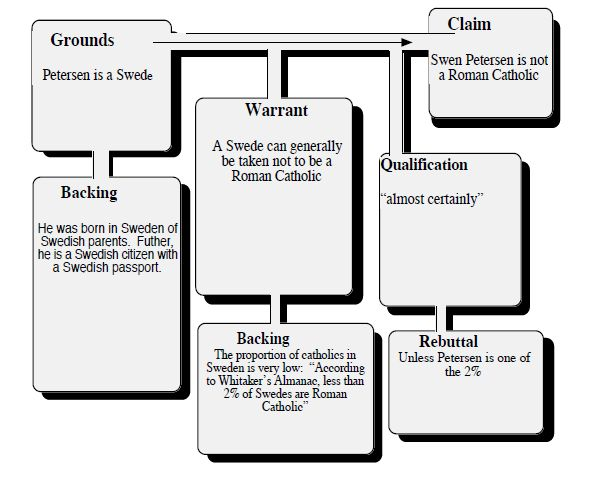
The model becomes most useful when we stop treating it as a vocabulary list and focus on the element people most often leave implicit: the warrant.
3. The Warrant: The Hidden Bridge in an Argument
Suppose someone makes a claim in some field or domain. We can call it an opinion, thesis, point, or conclusion, but in each case it is a proposition we are being asked to regard as true, false, likely, unlikely, relevant, justified, or otherwise worthy of acceptance.
Simply asserting a claim is not enough. We normally need data, grounds, or evidence that locate the argument in reality. Yet evidence is different from the claim and does not speak for itself. Many different conclusions can be drawn from the same information. In that sense, evidence can be underdetermined: what we have may be insufficient to determine a single attitude toward a proposition.
In other cases, evidence can be overdetermined. Handprints on a weapon and DNA evidence may both support the same conclusion even if either piece of evidence, in a particular case, would already be strong enough to matter. But why do we treat the presence of DNA as relevant to whether a defendant was involved in a crime? The evidence does not announce its own meaning.
This is where the warrant stands out. The warrant is the relevance rule that connects the data to the claim. Warrants are often unstated assumptions informed by our worldview, experience, experiments, common sense, social conditioning, professional standards, or prior arguments we have internalized as true. They can be difficult to identify precisely because we often take them for granted.
Consider the DNA example. An argument might depend on warrants such as: DNA at a location is strongly associated with a particular individual; the sample was collected and analyzed reliably; and exceptional explanations such as contamination, identical twins, or planted evidence are not sufficiently plausible in the case at hand. Once made explicit, these warrants can themselves be examined. The evidence may remain exactly the same while our confidence in the inference changes.
The same structure appears in arguments about public policy. Suppose someone argues that taxes should be raised and points to employment levels and social-happiness indices in Scandinavian countries. An empirical warrant might be that policies producing certain outcomes in northern European countries can generalize, at least to some degree, to the United States. But a policy conclusion also involves a normative warrant: that the outcomes being measured are sufficiently valuable to justify the proposed intervention. Those are separate bridges, and either can be challenged.
Backing then becomes the support for the warrant itself. What makes us confident that conditions in one country generalize to another? What comparative evidence, economic theory, causal analysis, institutional similarities, or prior research supports that transfer? The claim can also be qualified so that its force remains proportionate to the strength of the grounds, warrant, and backing.
A worked example: trucks, supply, and demand
Suppose we hear an announcement that Ford has flooded the market with new trucks, and I claim that the market price of trucks will rapidly decline. Why can I make that claim? Because the theory of supply and demand provides an inferential framework. Under the assumptions of competitive markets, equilibrium prices should tend to decline when supply increases and demand remains constant.
| Element | In the example | What could be challenged? |
|---|---|---|
| Claim | Truck prices will decline. | How quickly? In which market? By how much? |
| Grounds | A reliable report says Ford increased truck production. | Is the report accurate, and is the increase large enough to matter? |
| Warrant | Other things equal, increasing supply tends to lower equilibrium price when demand is unchanged. | Are the competitive-market assumptions approximately satisfied? Is demand actually unchanged? |
| Backing | Economic theory and empirical literature on supply, demand, and market adjustment. | How well does that literature apply to this particular market and time period? |
| Qualifier | Prices will probably decline, other things equal. | The appropriate strength and scope of the conclusion. |
| Rebuttal | Unless demand rises, inventories are withheld, supply constraints appear elsewhere, or another market change offsets the increase. | Whether an exception actually applies. |
Essentially, we have a claim and want to show that the conditions that would make the claim reasonable are in fact instantiated.
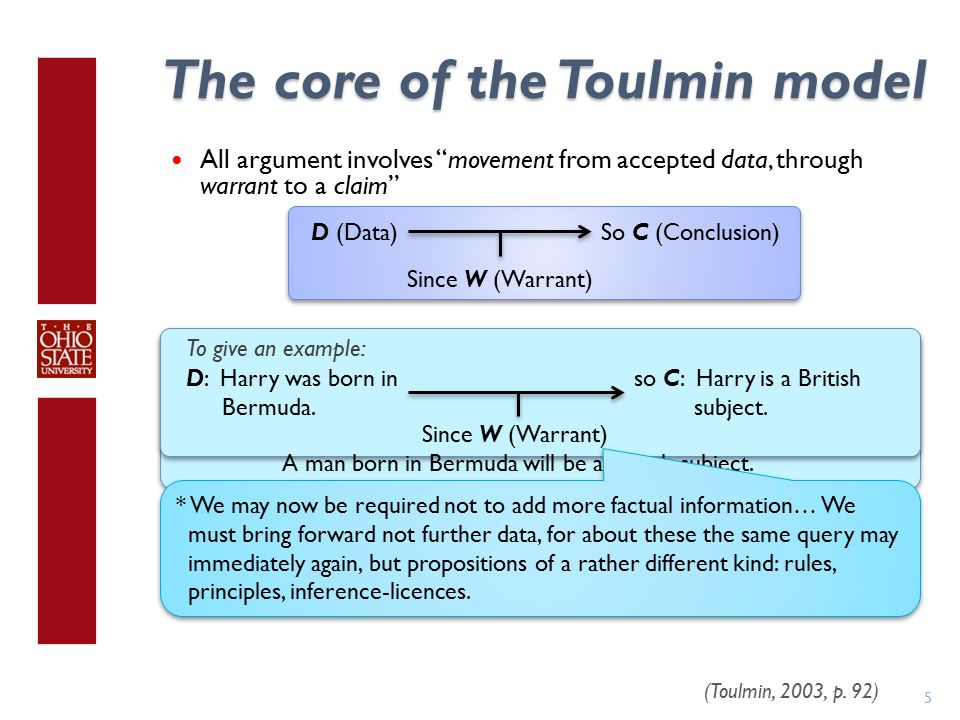
Why this matters for critical thinking
The core idea is that the warrant connects everything when we reason and try to convince. Critical thinking is therefore not only the ability to verify whether a set of data is reliable or whether an argument is formally valid. It also involves exposing and testing the assumptions that make the inference possible.
Suppose the claim is that the federal government should mandate a nationwide ban on e-cigarettes because some percentage of teenagers have gained access to them. We can identify the claim and the data, but the interesting work begins when we ask about the warrant. One empirical warrant might be that a ban would materially reduce adolescent access. A normative warrant might be that reducing adolescent access justifies this particular restriction, despite its costs and competing values. Different people can agree on the same dataset and still reach different policy recommendations because they are relying on different warrants.
This is also why principles such as Occam’s razor matter in scientific reasoning. Parsimony can function as a warrant or methodological principle: when competing hypotheses explain the same observations comparably well, we often prefer the one that requires fewer unsupported assumptions. Other standards, such as falsifiability, can also shape which inferences a field accepts. Even well-founded warrants remain open to examination: when do they apply, what supports them, and what would defeat them?
Here are two more examples of the model in action:
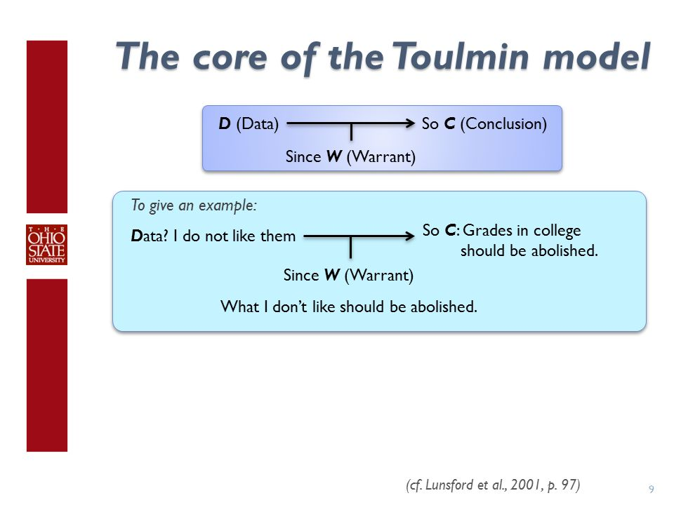
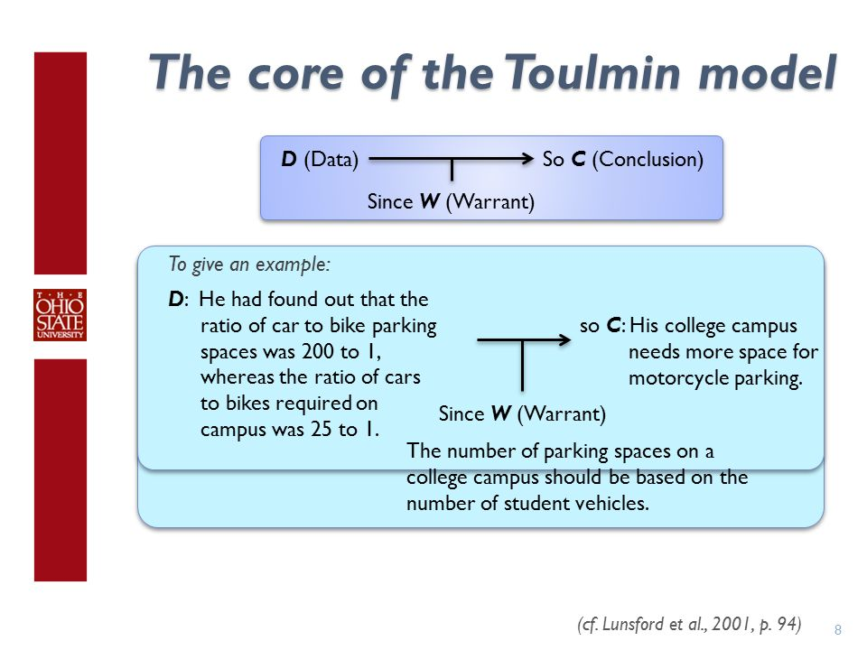
4. Qualification, Rebuttal, and Intellectual Humility
The Toulmin model matters not only because it helps us criticize other people’s reasoning, but because it gives us a disciplined way to examine our own.
I do not think it is always obvious to us that we should probe the reasoning behind our own beliefs. Many of us are brought up to behave as though whatever we hold to be true simply is true, and we can become convinced almost as a matter of dogma that self-doubt is inherently bad. Critical self-assessment can instead be enlightening. Once we have a common structure for evaluating arguments, we can begin to notice where we apply demanding criticisms to others while withholding the same scrutiny from ourselves. For me, overcoming that asymmetry was one of the most important consequences of learning to think this way.
Many people also feel pressure to commit themselves to the strongest possible version of whatever they believe. But qualifying a claim, or limiting its scope, is not a weakness. It often makes the argument more precise and more faithful to reality because the force of the conclusion is calibrated to the evidence supporting it.
In The Uses of Argument, Toulmin does not require qualifiers to function as precise numerical probability estimates. In practical argument, that level of precision is often impossible. Saying “it may be” need not imply that a probability has been established within a one- or two-percentage-point margin; it can simply indicate that the possibility is genuinely open. Making the grounds, warrant, backing, and qualifier explicit can therefore help us recalibrate the degree of conviction we attach to a belief.
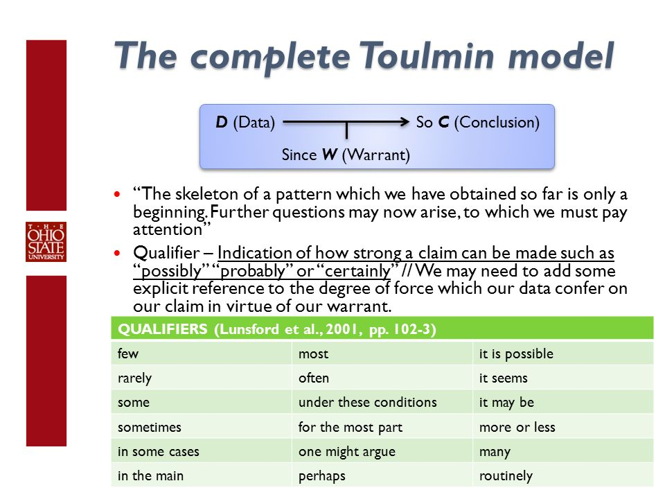
Rebuttals make fallibility explicit
Here is what the fuller structure looks like in practice:
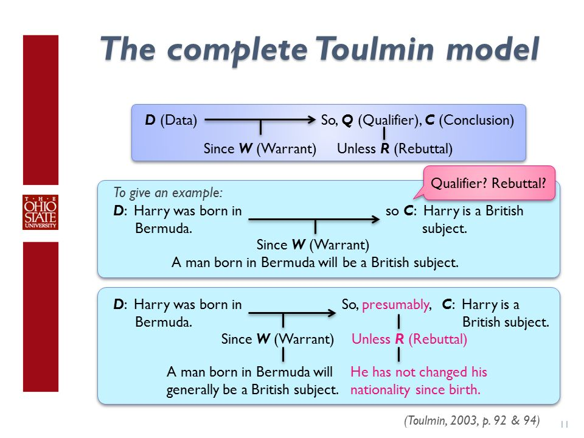
The rebuttal is key because it makes explicit the conditions under which the inference might be incorrect. Stating those conditions makes it visible how we could be wrong, which is a practical form of intellectual humility. It also turns an argument into something that can be revised as new information appears rather than defended at all costs.
A conclusion in one Toulmin argument can become a premise, item of backing, or component in another argument. Arguments can therefore be nested inside larger arguments. That observation leads to a deeper issue in Toulmin’s work: although the schematic form of argument may recur, the standards governing good warrants and good backing can differ substantially from one field to another.
The next question is therefore not merely whether an argument has a warrant, but what makes a warrant legitimate in the domain where the argument is being made.
5. Field-Dependent Reasoning
Toulmin was a critic of both absolutism and relativism. His distinction between field-invariant and field-dependent features of argument offers a way to explain how standards of reasoning can vary across domains without making every standard arbitrary.
“Invariant” means constant, unchanging, or unaffected. A field-invariant feature of argument would be one that operates in much the same way across different domains. A field-dependent—or field-variant—feature changes according to the practices and standards of a particular domain. Chemists, historians, lawyers, politicians, economists, and ordinary people can all make arguments, yet the procedures by which they establish evidence, relevance, authority, and acceptable inference may differ dramatically.
This raises an apparent dilemma. If the truth or justification of practical claims depends partly on context, are we forced into radical relativism? On the other hand, if certainty is available only through axiomatic mathematical reasoning, does that mean practical fields cannot generate knowledge at all? Toulmin’s project resists this dichotomy. Practical reasoning does not have to be either context-free and absolute or arbitrary and relativistic.
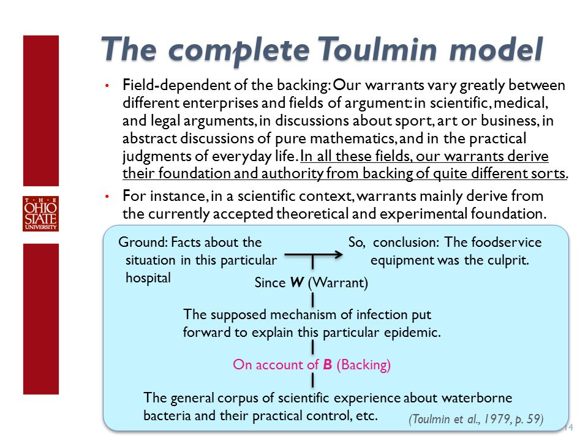
If you think about it, the basic motivation is intuitive. We do not always use the same standards in law that we use in scientific inquiry, and the fact that their standards differ does not make both domains merely relativistic. Nor would it make sense to apply a model of deductive proof from formal logic unchanged to every practical legal dispute. Normative and evidential conditions vary from field to field. This resembles Wittgenstein’s idea of language games: the standards governing meaningful moves depend partly on the practice in which those moves occur.
For me, the most useful place to locate this field dependence is often the warrant. Toulmin’s general way of representing argument can appear remarkably broad, while the particular warrant instantiated in an argument is more dependent on the domain. The rules governing which generalizations, methods, or principles count as legitimate are often tied to the field from which they arise.
This helps explain why a causal claim about a medicine may be regarded as suspect when it is supported only by evidence that epidemiology or clinical research treats as weak. If the backing for a causal warrant lacks randomized trials, credible observational designs, or other relevant methodological safeguards, we have reason to regard the warrant as fragile. The issue is not merely whether some evidence exists; it is whether the field has good reasons for treating that kind of evidence as capable of supporting the inference.
What counts as an argument field?
In the introduction to Readings in Argumentation, there is a passage I find illuminating because it complicates the apparently simple distinction between field-invariant and field-dependent reasoning. The authors ask both which features of arguments we should examine and how discourse should be divided into fields in the first place:
Toulmin first advanced the notion of "argument fields" in his book The Uses of Argument (1958; cf. Toulmin, 1972; Toulmin, Rieke & Janik, 1979). He suggested that some features or characteristics of argument are field invariant (occur and/or are used in the same way wherever argument occurs), while others are field dependent (vary from field to field). This is an intriguing idea, and, if correct, it is useful for argument critics and theorists to identify which aspects of argument are field invariant, as well as to specify the various argument fields and the field dependent features of argument found in each. While this project may seem fairly straight-forward, two important questions arise. First, which characteristics of argument should we examine, in order to determine whether they are field invariant or dependent? Among the many choices available are: (1) components of an argument (data, reasoning, claims, qualifiers, etc.); (2) procedures (rules, presumption, order of speeches, etc.); (3) styles of arguing, and (4) strategies in advocacy. Any distinction that we can make concerning arguments and arguing could serve as the basis for inquiry into field invariant and dependent traits. However, these possibilities may not necessarily vary between different fields. That is, procedures might differ, but components might not. The field theorist or critic must decide which characteristics of argument to examine. Second, we must decide how to divide up discourse into argument fields. They could, for example, be defined by academic specialties (economics, politics, law, etc.). However, should political arguments made by politicians about, say, the annual budget, be considered to occur in a separate field from the arguments of political scientists who try to understand the budget-making process? Furthermore, would the argumentation of ordinary people about government spending and taxation be considered yet another field? Another example to indicate the difficulties inherent in defining argument fields concerns doctors and economists. When doctors argue about medicine and economists argue about economics we have two different fields. However, when doctors and economists dispute about medical economics is that a third field, or two additional ones?
So it is not obvious what should count as field invariant, nor is it obvious how argument fields themselves should be carved up. Nevertheless, the distinction remains useful for critical thinking because the very question “What makes this an argument field?” forces us to investigate how a community establishes knowledge. We can ask which methods are considered legitimate, what standards of evidence operate, which forms of expertise matter, and how those standards are criticized and revised.
This gives the critical thinker insight into how knowledge is formed, to what extent it rests on explicit methodology, and why expert advice can sometimes conflict with common-sense assumptions. Our personal warrants may differ from those used by established professionals. Rather than treating that discrepancy as a contest of authority, we can ask how each side arrived at its conclusion and what backs the relevant warrant. The Toulmin model provides a general structure for doing that.
Anecdote versus causal inference
For example, why do medical researchers tend to discount anecdotal reports when trying to establish whether a drug caused an outcome, while people in ordinary conversation may find the same anecdote highly convincing? Researchers have methodological reasons for treating a single anecdote as weak evidence for causal effect: probability theory, experimental design, confounding, reproducibility, regression to the mean, selection effects, and other causal fallacies all matter.
| Perspective | Toulmin reconstruction | What changes? |
|---|---|---|
| Ordinary anecdotal inference | D: I was sick, ate an apple, and then recovered. W: My firsthand experience is a legitimate basis for inferring cause and effect. C: Apples cure this sickness. | The warrant gives strong causal force to temporal sequence and personal experience. |
| Research-oriented inference | D: The subject was sick, ate an apple, and subsequently recovered. W: A single uncontrolled experience is vulnerable to confounding, non-reproducibility, regression to the mean, bias, and causal fallacies. C: It is unlikely that this observation alone establishes that the apple caused the recovery; additional research is needed. | The same observation is interpreted through a warrant backed by methodological standards for causal inference. |
The warrant is therefore neither arbitrary nor automatically universal. Some standards—for example, standards for causal inference—can travel across many fields interested in cause and effect, yet causal relations are not “proved” in the same formal sense as mathematical theorems. A critical thinker listening at the dinner table, watching the news, or reading a politically charged post can use this distinction to ask why one warrant is fragile while another is better supported.
A compact reference summary
The following diagrams and examples from the original discussion can now be read as variations on the same recurring structure:
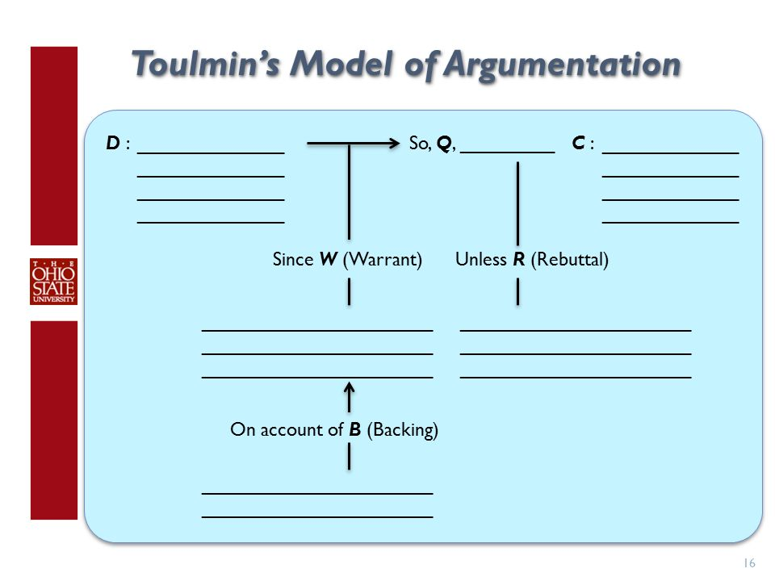
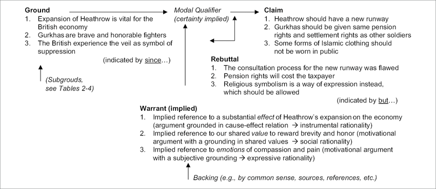
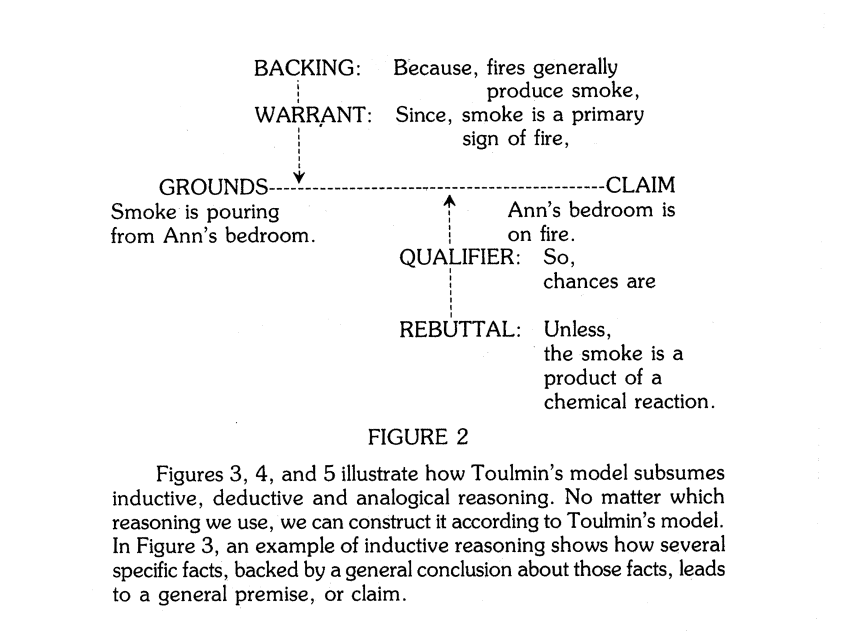
6. Toulmin as a General Tool for Analyzing Reasoning
People often say “the facts are the facts” or “the facts speak for themselves.” But even if we agree completely on the facts, another question remains: How do you get from those facts to your conclusion? What is the glue—the rule, mechanism, or justificatory process—that connects the data to the claim? This is not necessarily a demand for more data. It is a demand to make the inference itself visible.
My stronger intuition is that the Toulmin model can reconstruct an extraordinarily wide range of practical arguments, especially defeasible ones. Rather than treating this as an unrestricted claim that every possible form of reasoning is literally identical, it is more useful to treat it as a hypothesis about the model’s generality: if another argumentation scheme can be mapped onto grounds, warrants, backing, qualifiers, and rebuttals without distorting what makes that scheme distinctive, then Toulmin has genuine explanatory reach.
This reminds me, at least metaphorically, of the universality of a Turing machine: a relatively compact formal structure can represent many apparently different operations. To test that intuition, consider the abductive argumentation scheme discussed by Douglas Walton in Abductive, Presumptive and Plausible Arguments.
Deduction, induction, and abduction
| Mode | Marble example | Inferential direction |
|---|---|---|
| Deductive reasoning | A bag contains only red marbles. You remove one marble. You infer that the marble is red. | From a rule and case to a conclusion that follows necessarily, assuming the premises are true. |
| Inductive reasoning | You do not know the colors in the bag. You sample a marble and it is red. You infer that the other marbles, perhaps all of them, are likely red. | From observations or samples toward a broader generalization. |
| Abductive reasoning | You find a red marble near a bag of red marbles. You infer that the marble probably came from the bag. | From an observation toward a plausible explanation of that observation. |
In the abductive example, the process can be represented as follows:
- Positive data: a red marble is on the floor near a bag of red marbles.
- Hypothesis: the red marble came from the bag.
- Negative data: no other relevant facts presently suggest a comparably plausible explanation of where the marble came from.
- Conclusion: the hypothesis that the marble came from the bag is the best available guess.
Walton’s abductive scheme
The scheme Walton identifies in the literature can be expressed compactly:
- D is a collection of data.
- H explains D.
- No other hypothesis explains D as well as H does.
- Therefore, H is probably true.
That scheme immediately generates critical questions:
- How decisively does H surpass the alternatives?
- How good is H by itself, independently of the alternatives? Even the best available hypothesis may be too implausible to accept.
- How reliable are the data?
- How confident are we that all plausible explanations have been considered? How thorough was the search for alternatives?
- What are the pragmatic costs of being wrong and the benefits of being right?
- How strong is the need to reach a conclusion now, especially if further evidence could be gathered before deciding?
A modern version of the scheme
Walton’s later formulation can be stated this way:
- F is a finding or given set of facts.
- E is a satisfactory explanation of F.
- No alternative explanation E′ given so far is as satisfactory as E.
- Therefore, E is plausible as a hypothesis.
The corresponding critical questions are:
- CQ1: How satisfactory is E itself as an explanation of F, apart from the alternatives available so far in the dialogue?
- CQ2: How much better an explanation is E than the alternatives available so far?
- CQ3: How far has the dialogue or inquiry progressed? How thorough has the search been?
- CQ4: Would it be better to continue the dialogue or investigation rather than draw a conclusion now?
Transposing abduction onto the Toulmin model
| Toulmin element | Red-marble reconstruction | Connection to Walton |
|---|---|---|
| Claim (C) | The red marble came from this bag. | The preferred explanatory hypothesis, E or H. |
| Qualifier (Q) | Probably; presumably. | The conclusion is plausible rather than deductively certain. |
| Data (D) | There is a red marble on the floor near a bag full of red marbles. | The finding or collection of data requiring explanation. |
| Warrant (W) | Ordinarily, when an object found nearby matches the contents of a collection, one plausible explanation is that it came from that collection, absent contrary evidence. | The rule licensing movement from the observed facts to the explanatory hypothesis. |
| Backing (B) | Common experience, ordinary causal expectations, and the absence of a stronger rival explanation. | Considerations that make the explanatory rule credible in the context. |
| Rebuttal (R) | Another person had a separate bag of red marbles in the room, spilled it, and failed to clean up completely. | A critical question or new fact that defeats the current best explanation. |
Now suppose we obtain a reason for overriding the original warrant and backing. The dialogue proceeds, and we learn that another person was in the room with a separate bag of red marbles, spilled it, and did not fully clean up the mess. That information functions as a rebuttal. It gives us a live alternative explanation and thereby defeats or at least weakens the original claim.
The example is deliberately simple, but the structure scales to much more complicated cases that affect our lives. The important point is that Walton’s critical questions can often be understood as ways of probing the Toulmin warrant, backing, qualifier, and rebuttal: How good is the explanatory bridge? How thoroughly have alternatives been searched? How confident should we be? What new information would force revision?
7. What Toulmin Ultimately Teaches Us
The key idea is to start thinking about your thinking. I never really did that in a systematic way until I was introduced to frameworks that made the hidden structure of reasoning visible.
Toulmin’s model taught me that critical thinking is not simply the accumulation of facts and not simply the detection of formal invalidity. It is the practice of asking what connects evidence to a conclusion. What is the claim? What are the grounds? What warrant makes those grounds relevant? What backs that warrant? How strongly should the conclusion be held? Under what conditions would the argument fail?
Those questions also explain why disagreement can persist even after people agree on the evidence. They may be using different empirical warrants, different normative warrants, different standards of backing, or different judgments about exceptions and uncertainty. Making those differences explicit does not guarantee agreement, but it transforms the disagreement from a collision of conclusions into an argument that can actually be examined.
The field-dependent dimension adds another lesson. Different domains can rely on different standards without making those standards arbitrary. A medical researcher, lawyer, historian, economist, and ordinary citizen may legitimately ask different questions of evidence because their fields face different problems and have developed different ways of controlling error. Those standards remain open to criticism, but criticizing them requires engaging with the reasons and backing that make them standards in the first place.
That is the intellectual change I was trying to describe at the beginning. Education became less about receiving finished conclusions and more about entering into the process by which conclusions are made, challenged, qualified, and revised. Once the structure of an argument is visible, “What do I think?” becomes inseparable from a better question: Why am I entitled to think it?